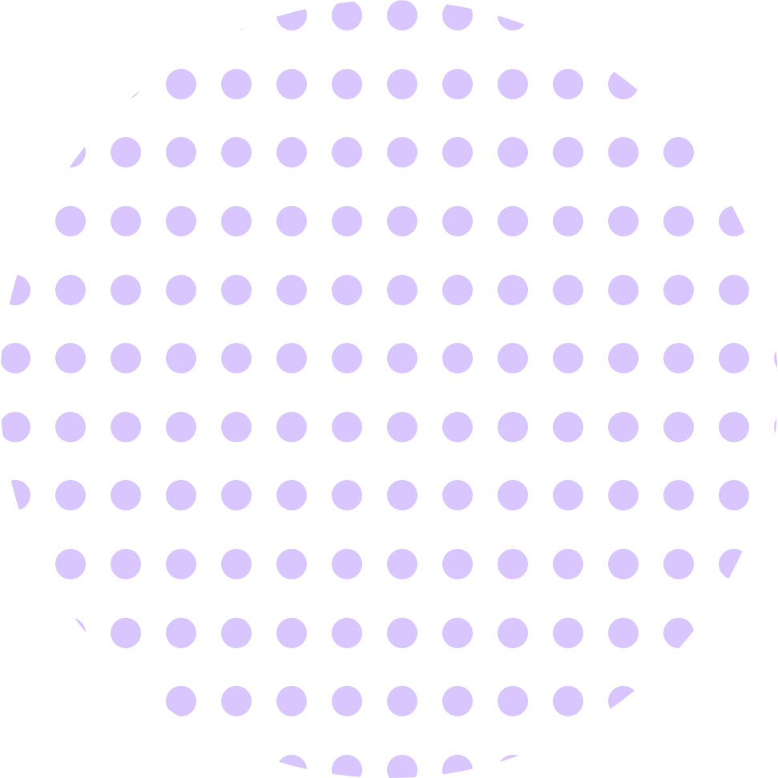
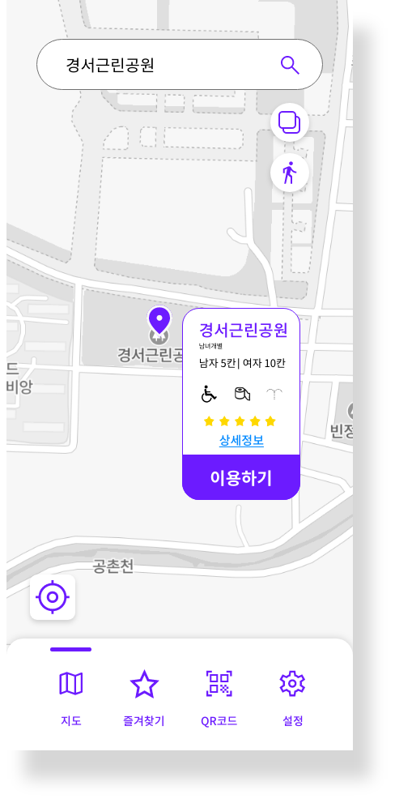

01
First Utopia
UI/UX


02
Second Utopia
WEB

IDEA
주변 공중화장실을 쉽고 빠르며
안전하게 이용할 수는 없을까?
급한 상황 주변 화장실을 안전하게
확인하고 이용 할 수 있는 어플


SERVICE
위치기반 서비스
정확한 위치기반 서비스를 이용하여 본인에게 가장 가까운 공중화장실 정보를
나타내줍니다. 건물의 위치 파악, 이동하는데 필요한 소요시간 및 네비게이션
은 물론 차량 운전시 가장 가까운 주차장과 화장실의 위치를 사용자에게 알려
줍니다.
상태확인
사용자가 이용할 공중화장실의 청결 상태와, 휴지 및
비데 유무 등 사용자를 위한 편의사항을 한눈에 알아
볼 수 있습니다.
안전점검
사용자가 이용할 공중화장실이 가장 최근 불법촬영유무검사를 진행할 날짜와
상세한 내용을 표시해주며 안전사고 및 비상사태시 신고기능을 이용할 수 있
습니다. 또한 불법촬영방지필름 자판기를 이용해 사용자가 직접적으로 자체
검사가 가능합니다.
사용자 후기
해당 공중화장실을 이용한 사용자들의 의견을 나누어
정보를 공유합니다. 해당 서비스는 애플리케이션의
직접적인 피드백을 통해 미흡한 점을 개선 할 수 있도
록 큰 도움을 줍니다.
IDENTITY
공중화장실에 대한 불편사항과 각종 범죄가 우려되는 요즘, 쉽고 간편하게 주
변 공중화장실을 이용할 수 있는 어플이 있다면 어떨까 에서 나온 아이디어.
가장 직관적으로 사용자에게 다가갈수 있도록 디자인 되었습니다.
한눈에 알아 볼 수 있는 픽토그램
스마트폰 화면에서 즉각적으로 화장실어플임을 보여주기 위하여
직관성이 높은 픽토그램을 이용하였습니다.
휴대폰 화면에서 바로 찾을 수 있는 색상을 이용하여
높은 시인성을 확보하였습니다.
COLOR
한눈에 들어오는 컬러 시스템
사용자에게 직접적인 시인성으로 다가가기 위해 원색위
주의 색상을 사용하였으며, 지나치게 가벼운 느낌은 피하
기 위해 메인 컬러는 보라색 계열로 디자인되었습니다.
서브 컬러는 메인컬러의 색상느낌과 어긋나지 않는 선에
서 확실히 구분이 가능한 색상으로 진행하였습니다. 전반
적으로 한 화면 안의 오브젝트들이 한눈에 부담없이 들어
오도록 방향을 잡았습니다.
Typography
곧바로 들어오는 정보
가독성, 신뢰성이 높은 'Noto Sans' 폰트를 사용하여 애
플리케이션 서체를 디자인하였습니다.
PLAY ON FAST
ROOM

MAIN_UI
사용자의 위치를 기반으로
주변 공중화장실의 정보를 보여줍니다.

<도보전용>
<차량전용>
CONTENTS_UI
사용자가 이용할 공중화장실에 대한 정보를
함축적으로 담고있습니다. 해당 화장실의 기본적인 정보 및
사용자 리뷰등을 한눈에 들어오게 디자인을 진행하였습니다.
<신고기능>
<즐겨찾기>
<사용자리뷰>
<점검일지>
QR_CODE
기업에서 불법촬영예방점검을 했다 하더라도 사용자에
게 100%의 안도감을 줄 수는 없습니다. 그렇기에 불법
촬영필름 자판기를 설치하여, 해당 자판기의 QR코드를
인식하면 불법촬영예방필름 이용이 가능합니다.
SUB_UI